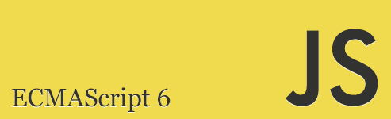

Compilador JavaScript
Quem está usando Babel
ECMAScript
TC39
Babel transforma seu código
Você digita JavaScript
var sum = (a, b) => a + bE recebe JavaScript
var sum = function(a, b) {
return a + b;
}Arquitetura
Compilador (Parser)
Transforma código em uma AST
Análise Léxica
Transforma código em um conjunto de tokens
var foo = function foo() {
return bar;
};[
{
"type": "Keyword",
"value": "var"
},
{
"type": "Identifier",
"value": "foo"
},
{
"type": "Punctuator",
"value": "="
},
{
"type": "Keyword",
"value": "function"
},
{
"type": "Identifier",
"value": "foo"
},
{
"type": "Punctuator",
"value": "("
},
{
"type": "Punctuator",
"value": ")"
},
{
"type": "Punctuator",
"value": "{"
},
{
"type": "Keyword",
"value": "return"
},
{
"type": "Identifier",
"value": "bar"
},
{
"type": "Punctuator",
"value": ";"
},
{
"type": "Punctuator",
"value": "}"
},
{
"type": "Punctuator",
"value": ";"
}
]Análise Sintática
Transforma os tokens em uma AST
var foo = function foo() {
return bar;
};{
"type": "Program",
"body": [
{
"type": "VariableDeclaration",
"declarations": [
{
"type": "VariableDeclarator",
"id": {
"type": "Identifier",
"name": "foo"
},
"init": {
"type": "FunctionExpression",
"id": {
"type": "Identifier",
"name": "foo"
},
"params": [],
"defaults": [],
"body": {
"type": "BlockStatement",
"body": [
{
"type": "ReturnStatement",
"argument": {
"type": "Identifier",
"name": "bar"
}
}
]
},
"generator": false,
"expression": false
}
}
],
"kind": "var"
}
],
"sourceType": "script"
}Transformação (Transformer)
- Manipulação da AST
- Análise Estática
- Transpilation
Transpilation
var [x, y] = [1, 2];var _ref = [1, 2];
var x = _ref[0];
var y = _ref[1];Geração (Generator)
- Transforma a AST novamente em código
- Inferência de estilos
Demonstração
Babel
- babeljs.io
- Apresentação por Lucas Medeiros
- Ferramenta desenvolvida por Sebastian Mckenzie